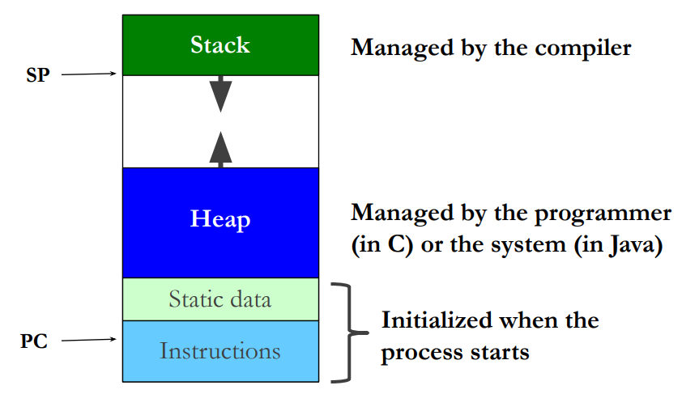

Introduction to C programming
- Chapter 2 (2.9)
- Chapter 4
- Chapter 5
- Chapter 6
Intro to C
Procedural vs Object-oriented
- Different ways of thinking
- Procedural (or Imperative) languages
- Example: C
- Programmers think in terms of operations to be done
and supply data for the operation
- add (a, b);
- Object-oriented languages
- Example: C++, Java
- Programmers first think of the objects to be operated on
and then what operation to perform.
- rect.area();
C is less “safe”
- Run-time errors are not ‘caught’ in C
- The Java interpreter catches these errors before they are
executed by the processor
- Example: array out-of-bounds exception
- C run-time errors happen for real and the program crashes
- The Java interpreter catches these errors before they are
executed by the processor
- The C compiler trusts the programmer!
- Many mistakes go un-noticed, causing run-time errors and leaving systems vulnerable to security exploits
Built-in data types
- The usual basic data types are there: char 8 bits short 16 int 16, 32, 64 (same as machine word size) long 32, 64 float 32 double 64
- Data type sizes are machine dependent
- Unlike Java where an int is always 32 bits
- Normally signed, unsigned available too
- No boolean type exists
- for any number (int, char,…): 0 false, other true
Intro to Pointers
Pointers in C
- Pointers are special variables that reference (or point to) another variable
- We have already seen pointers in assembly:
ldr r1,[r2]- r2 is a pointer
- C pointers are the same thing!
- r2 points to the location in memory where the “real” data is kept
- r2 is a register, but there’s nothing stopping us to have pointers stored in memory like “normal” variables
- A C pointer is a variable that holds the address of a piece of data
- Declaration:
int \*p; // p is a pointer to an int- The compiler must know what data type the pointer points to
- Basic pointer usage:
p = &i; // p points to i now
\*p = 5; // \*p is another name for i
- & - address of operator. * dereference operator
Pointers as function arguments
- In Java
- an argument with primitive type is passed by value (function gets copy of value)
- an argument with class type is passed by reference (function gets reference to value)
- In C
- Most arguments passed by value
- To get effect of `pass by reference’, use an argument with a pointer type
Memory Mapping
Two’s complement
- Flip all the bits
- Add one
Sign extension
When extending a two's complement value, we don't append zeros to the left, we append the value of the left-most bit.
Memory Manipulation with Pointers
- Q: If all pointers are 32-bit wide, why do we need to declare their datatype?
- A: The datatype provides the size (or type) of the variable the pointer points to.
Casting
int i = 4;
short s;
s = i;copies the two right-most bytes, resulting ins = 4s = *(short*)&i;copies the two left-most bytes, resulting ins = 0
short s = 4;
int i;
i = s;places the two bytes from s into the right side of i, resulting ini = 4i = *(int*)&s;copies the two bytes from s into the left side of i, resulting ini = 2^20
Structures in C
Composite data types - struct
- Structures are like objects, but their types have no methods, unlike classes:
struct point {
int x, y;
// can include other structs
} p1;
struct point p2;
- Members accessed using “.” operator:
p1.x = 2; - Notice that pointers use a different operator to access members.
p1.x = 10;
struct point *p2 = &p1;
p2->x = 20;
(*p2).y = 30; // equal to p2->y = 30
What does p1.y translate to in Assembly?
; r1 points to the starting addr of p1
ldr r0, [r1] ; loads p1.x
ldr r0, [r1, #4] ; loads p1.y
Arrays in C
- Syntax of C arrays similar to Java
- As in Java, C arrays have fixed size
- Example declarations of array:
int m[] = {5, 8, 10}; // size fixed to 3
int n[2][10]; // two-dimensional array
// with 2 rows and 10 cols
point p[4]; // array of 4 structs
- C arrays have no knowledge of their length
- No checking that indexes are within bounds
- In C, close relationship between arrays and pointers
- Pointers commonly used to pass arrays between functions
More pointer arithmetic
- Common expressions:
*p++use value pointed by p, make p point to next element*++pas above, but increment p first(*p)++increment value pointed by p, p is unchanged
- Special value NULL used to show that a pointer is not pointing to anything
- NULL is typically 0, so statements like if (!p) are common
- Dereferencing a NULL pointer is a very common cause of C program crashes
Memory Management
- Pointers are not much use with statically allocated data
- Library function malloc allocates a chunk of memory at run time and returns the address
int *p;
if ((p = malloc(n*sizeof(int))) == NULL)
{
// Error
}
...
free(p); // release the allocated memory
Memory management is different
- In Java
- All objects dynamically allocated
- Unusable objects recycled automatically by garbage collection
- In C
- No objects, only data structures
- Some data structures statically allocated, others dynamically
- Dynamically-allocated storage must be reclaimed (or freed) once the data structures there are no longer needed.
- Major source of error, particularly when the programmer forgets to free the memory, resulting in memory leaks.
Memory regions and management
- Memory areas
- Heap: dynamically allocated storage
- Stack: for function/method local variables
- Static: for data living program lifetime
- In Java
- All objects on heap
- Unusable objects on heap recycled automatically by garbage collection
- In C
- Data structures in all 3 areas
- Programs must explicitly free-up heap storage that is no longer needed
Memory regions in detail

Categories of variables in C
- Global variables (statically allocated)
- Defined outside of functions
- Have lifetime of program and scope to file end
- extern declarations extend scope before definition and to other files
- Declare static to hide from other files
- Local (automatic) variables (allocated on stack)
- Defined inside a function
- Not available outside function
- Distinct storage for each function invocation
- Declare static for same storage for all invocations